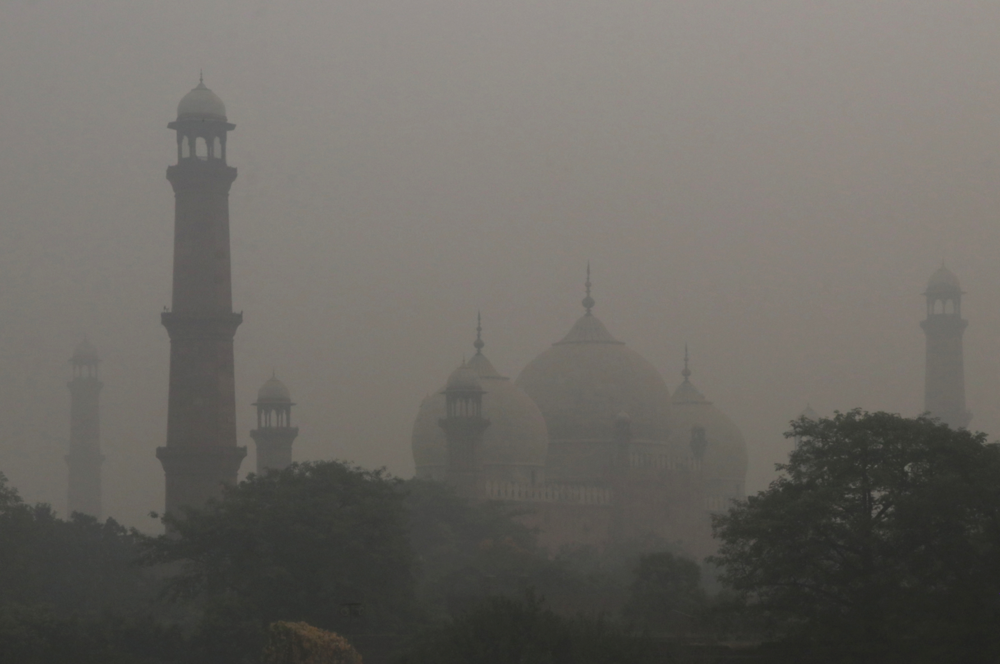

Lahore ko izaat do

The Earth is dying, you can help to save it
Global warming, an aspect of climate change, is the observed and projected increase in the average temperature of the Earth’s atmosphere and oceans. According to the U.S global change research program report, the planet is warming from north to the South Pole. Since 1906, the global average surface temperature has increased by more than 1.6 degrees Fahrenheit(0.9 degree Celsius)- even more in sensitive polar regions. It is of major interest to all the environmentalists, economist, socialist industrialists, politicians. Over the last 10 years, sea level has risen at an alarming rate. It is caused by both natural and anthropogenic. Accumulation of greenhouse gases( Water vapour (H. 2O), Carbon dioxide (CO. ... Methane (CH. ... Nitrous oxide (N. 2O) Ozone (O. ... Chlorofluorocarbons (CFCs) Hydrofluorocarbons (includes HCFCs and HFCs) in the atmosphere is the cause of global warming.
Pakistan's Ravi river, which flows past lahore, delivers nearly 1.5 million tons of plastic waste.
Scientists — already have documented these impacts of climate change.
- Ice is melting worldwide, especially at the Earth’s poles. This includes mountain glaciers, ice sheets covering West Antarctica and Greenland, and Arctic sea ice. In Montana's Glacier National Park the number of glaciers has declined to fewer than 30 from more than 150 in 1910.
- Much of this melting ice contributes to sea-level rise. Global sea levels are rising 0.13 inches (3.2 millimetres) a year, and the rise is occurring at a faster rate in recent years.
- Rising temperatures are affecting wildlife and their habitats. Vanishing ice has challenged species such as the Adélie penguin in Antarctica, where some populations on the western peninsula have collapsed by 90 per cent or more.
- As temperatures change, many species are on the move. Some butterflies, foxes, and alpine plants have migrated farther north or to higher, cooler areas.
- Precipitation (rain and snowfall) has increased across the globe, on average. Yet some regions are experiencing more severe drought, increasing the risk of wildfires, lost crops, and drinking water shortages.
Pakistan's Kabul river, which flows past Peshawar, delivers nearly 1.5 million tons of plastic waste.
Other effects — could take place later this century if warming continues. These include:
- Sea levels are expected to rise between 10 and 32 inches (26 and 82 centimetres) or higher by the end of the century.
- Hurricanes and other storms are likely to become stronger. Floods and droughts will become more common. Large parts of the U.S., for example, face a higher risk of decades-long "megadroughts" by 2100.
- Less freshwater will be available since glaciers store about three-quarters of the world's freshwater.
- Some diseases will spread, such as mosquito-borne malaria (and the 2016 resurgence of the Zika virus).
- Ecosystems will continue to change: Some species will move farther north or become more successful; others, such as polar bears, won’t be able to adapt and could become extinct.